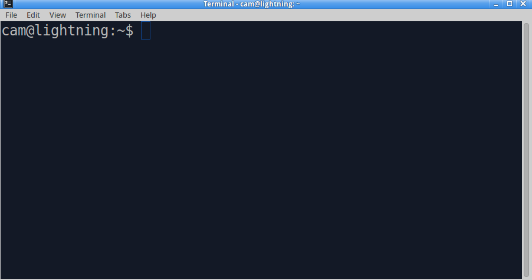
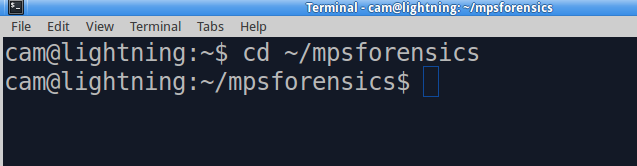
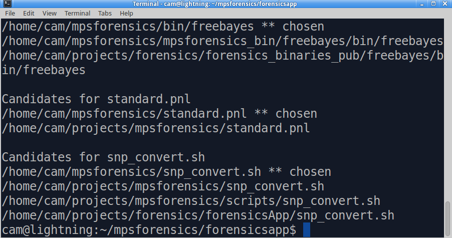

Return to help page
Return to help page
Updating the MPS Forensics application
Occasionally updates to the pipeline platform may become available,
possibly in the form of new command-line arguments for tools,
improved documentation, or bug fixes. Updating the application -
which includes the main application, pipeline arguments, documentation
and the SNP/STR viewer - is as easy as running a single command on
the command line.
- To update the application, open a terminal window by clicking on
the first icon in the top left of the screen, on the Ubuntu taskbar.
- When the box opens with "Search my computer", type "terminal"
(without the quotes) into the text box. A grey and black icon with
"Terminal" written under it will become available. Click this.
- The terminal window should appear and a prompt will become
available, which will look something like this:

- At the $ prompt, type the following and press enter/return
(don't type the first $ sign below, it represents the prompt
itself, and note the space between "cd" and "~"):
$ cd ~/mpsforensics

- The prompt should appear to change slightly to indicate that
you are now in the mpsforensics folder. Type the following and
press enter/return to pull down the updates:
$ git pull
- It should only take a few moments to pull down and apply any
updates. Whent the $ prompt becomes available again, type the
following and press enter/return:
$ source locater.sh
This step will likely take one to two minutes to complete as
the application makes sure it knows where to find the various
tools and resources it needs to operate correctly. It may not
appear to be doing anything at first but this is a sign that
everything is progressing smoothly. After the first 30 seconds
or so, you will see some messages appear regarding "Candidates
for" and the names of some files or tools. This list appears
when multiple installations are present for various tools and
files, but it is not a problem! For example:

- Once the prompt has appeared again you may close the terminal
window. The updates have been completed and installed.
Return to help page